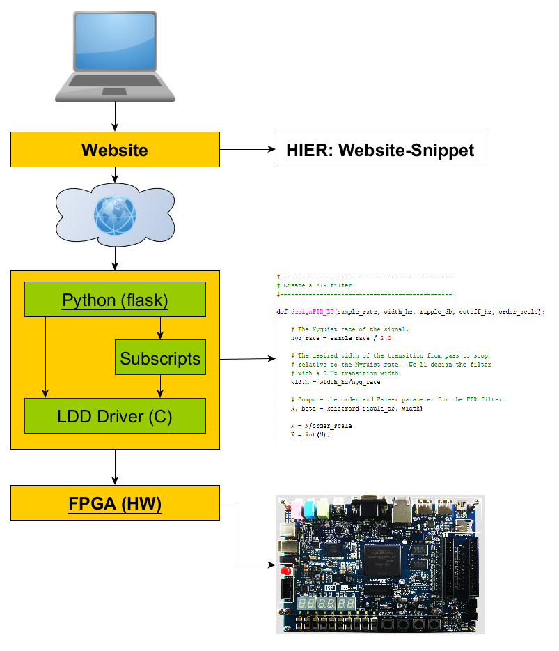

ASP-SoC
Wurm, Steinbacher, Steiger, Reisinger, Posch, Haberleitner
Created: 2018-02-06 Die 17:04
1 Einfuehrung
1.1 Motivation und Ziele

- Echtzeitverarbeitung
- Vielseitige Steuerungsmöglichkeiten durch GNU/Linux
- Keine CPU-Zeit im Betrieb nötig
1.2 Systemübersicht
- Kommunikation zwischen Linux und Signalverarbeitungsteil über Bridges
- Linux: Device Driver für jede konfigurierbare Komponente

2 Architektur
2.1 Kommunikation

Komponente zu Komponente: Avalon Streaming Bus HPS und Komponente: Avalon Memory Mapped Bus
2.2 Qsys
Eindimensionale Verbindung der Komponenten
3 Beispiel-Plattform
3.1 Uebersicht

3.2 Beispiel Channel-MUX
4 Fazit
4.1 Status & Aussicht
- Erste Blöcke bereits funktional
- Workflow ausgearbeitet und dokumentiert
- Mögliche Erweiterung auf Videoverarbeitung
4.2 GUI-Stack
